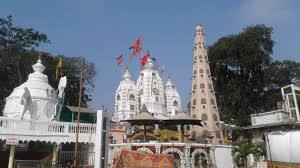
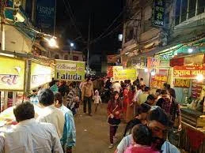
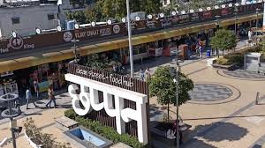

Places to Explore
घूमने के स्थान

The historical heart of Indore. This seven-story palace of the Holkar Dynasty features a unique blend of Maratha, Mughal, and French architectural styles. The majestic wooden entrance is a sight to behold.
इंदौर का ऐतिहासिक हृदय। होलकर राजवंश का यह सात मंजिला महल मराठा, मुगल और फ्रांसीसी शैलियों का अद्भुत संगम है।

Built by Ahilyabai Holkar, this temple is visited by thousands. It is believed that every wish made here is fulfilled.
अहिल्याबाई होलकर द्वारा निर्मित, यहाँ मान्यता है कि मांगी गई हर मन्नत पूरी होती है।

A jewelry market by day that turns into a night food paradise after 9 PM. Famous for Dahi Wada, Sabudana Khichdi, and Malpua.
दिन में आभूषण बाजार और रात 9 बजे के बाद खाद्य प्रेमियों का स्वर्ग।

An upscale food street housing 56 unique shops. Known for cleanliness and high-quality fusion snacks like Johnny Hot Dog.
56 अनूठी दुकानों वाला एक पॉश फूड हब, अपनी स्वच्छता और उच्च गुणवत्ता वाले नाश्ते के लिए प्रसिद्ध।